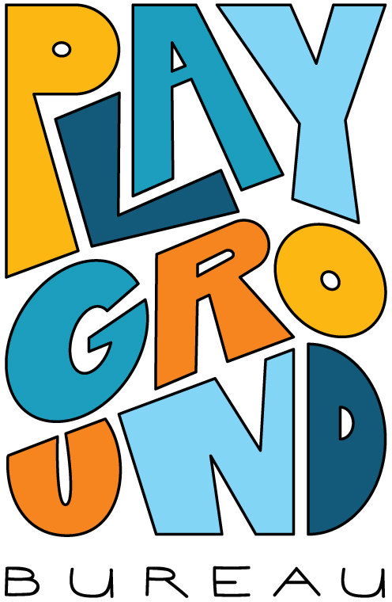
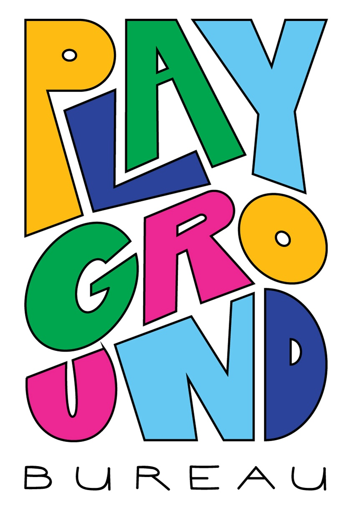
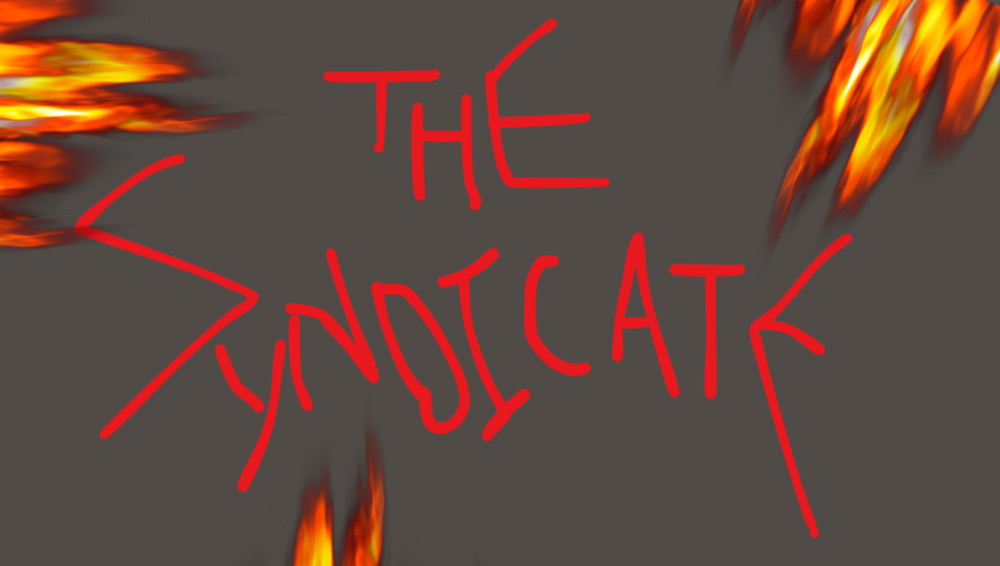

History of the Playground Bureau
1. Background
The year was 1980. Catherine “Cat” Sandwich, a completely unknown candidate with a campaign budget that wouldn’t cover a round of drinks, was elected head of state in a record-breaking 99%-to-1% landslide victory by capturing the hearts and minds of the country with a simple slogan: “How’s your neighbor doing?” While other candidates debated stock prices and GDP forecasts, Cat Sandwich argued that a country’s total wealth meant nothing if its people were not having a good time on this beautiful little planet.
Inspired by Bhutan’s Gross National Happiness concept, Cat Sandwich recalibrated the government’s goal towards maximizing Citizen Goodtimes, which meant not only ensuring fundamental material needs, but asking a question no government had bothered with: are people actually having a good time?
Soon her team of scientists discovered Goodtimesium (GTM), a quantum-neuro-molecular-something-or-other emitted by human beings in states of genuine connection, joy, and collective silliness. High GTM readings became the government’s north star.
2. The Bureau’s Origin
As countries around the globe followed Cat Sandwich’s lead, a certain Playground Bureau—a municipal parks office tasked with designing and maintaining playgrounds—drew attention. It was discovered that playgrounds designed by the Bureau produced unusually high Goodtimesium readings when kids were playing in them. Gradually, then suddenly, the Playground Bureau was elevated from a humble parks office to a full government agency under the newly created Ministry of Happiness, tasked with GTM-elevation strategies for the entire country. They insisted on keeping the name and aesthetics.


Exhibit 1: Historical progression of Bureau logo design by Agent Liv
The Bureau’s flagship program, MONKEY BUSINESS, is an annual sandbox for testing and developing new methods of Goodtimesium elevation.
3. The Separatoxin Threat
Over the recent years, Bureau scientists detected alarming readings of a counter-phenomenon: Separatoxin, a mysterious force linked to a decrease in people just hanging out and doing stuff together with each other. Its precise nature remains under investigation. The Bureau launched public awareness campaigns and recommended citizens spend more time together, but critics argued the response fell short of the scale of the threat.
4. The Syndicate
Not everyone believed the Bureau was moving fast enough. A renegade splinter group, rumored to include disgruntled ex-Bureau agents, began operating outside official channels under the name The Syndicate.

Exhibit 2: Insignia recovered from confiscated propaganda materials
Their activities have included defacing public and private installations, hijacking sound equipment for secret underground parties within Monkey Business, and distributing unverified propaganda in tinfoil hats (to insulate from “7G”). The Bureau has officially classified the Syndicate as a nuisance. The Syndicate has officially classified the Bureau as a sellout.
Any claims circulated by the Syndicate regarding the Bureau’s corporate partnerships do not reflect the official position of the Bureau and should be disregarded.
Best viewed in Internet Explorer 2.0 or Netscape Navigator 3.0 or higher, if that's even possible